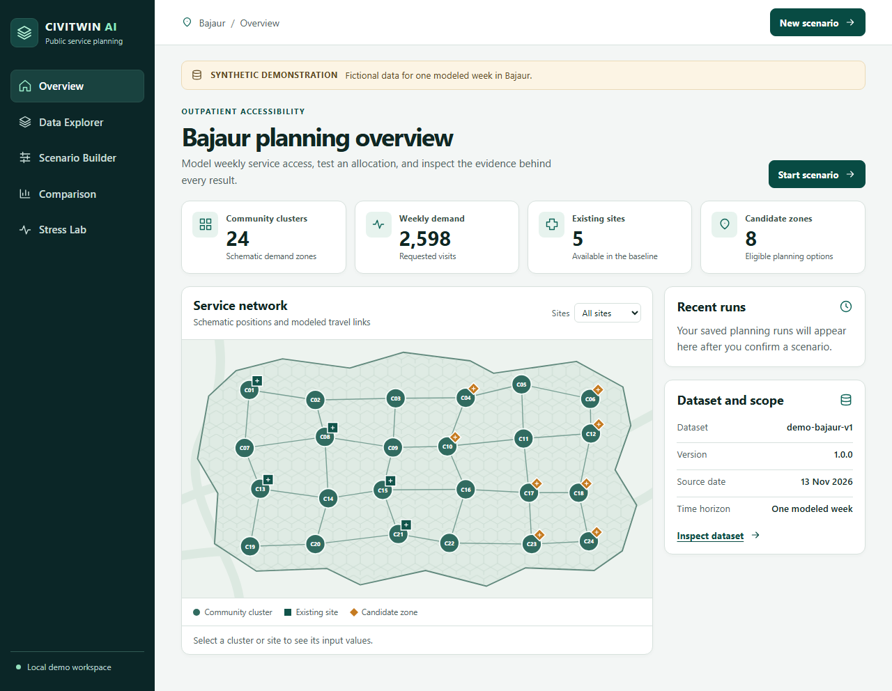

Synthetic demonstration · Bajaur
Plan for better service access
Explore how a weekly budget and limits on new service units change coverage in a fictional Bajaur network.
Explore scenarios
Compare recorded allocations
Choose a scenario from the release benchmark. Results were computed by the local solver and independently audited before publication. Run the local planner to solve with new inputs.
| Metric | Existing sites | Greedy | Optimized |
|---|
How sensitive is the default plan?
See the release benchmark for the 20 paired demand and travel scenarios.
The sensitivity cases use illustrative changes to weekly demand and modeled travel. They keep the selected sites fixed.